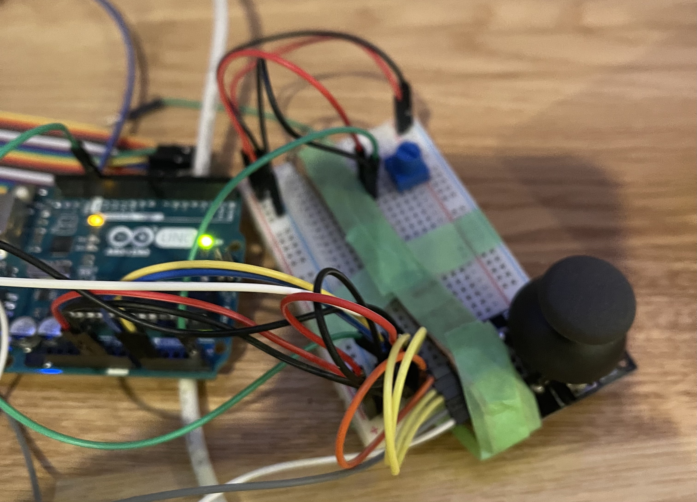
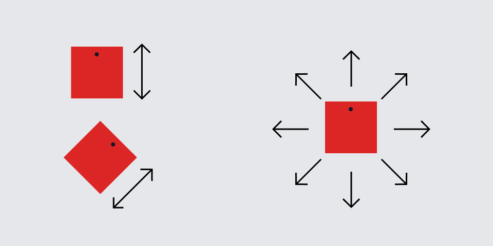
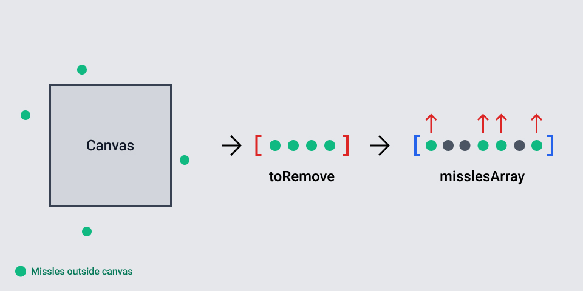
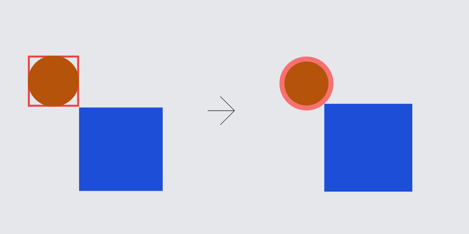
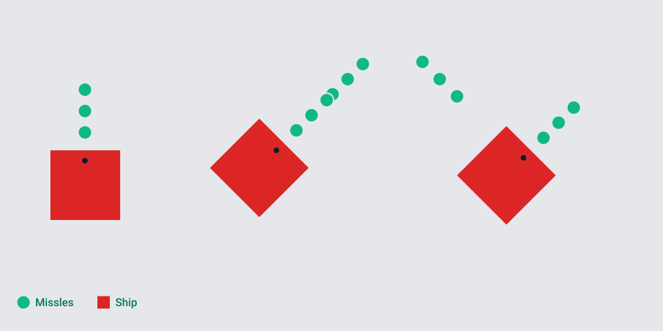

Project 2
July 16, 2021Spaceship game to destroy asteroids 🚀
I chose to work on a spaceship game to explore ways for users to play a game with a controller. The game is a simple: the player controls a spaceship and must destroy the asteroids to survive. I wanted to figure out how a player would control the spaceship and be able to shoot and destroy asteroids without problems.
Sensors
Defining controllers
Early development
I originally thought of using a joystick, a button, and a rotary encoder to control the ship. Later though, I realized that rotary encoder did not provide enough precision for the ship to rotate, which later I switched rotary encoder out with a potentiometer and removed a button because joystick already provided a push button.
Physical implementations
For the joystick, I first thought of making it as a source to move forward and backward into the direction the ship was facing. However, the mental model of the player would be that joystick would allow the ship move in the direction it's leaning towards. Which later, I used combination of X, Y positions of the joystick to move the ship fluidly around the canvas. There is one communication schema that made the spaceship to shoot like it's shooting a shot gun because the sensor would return button down for a fraction of second.
Controller shape
The controller is simplified version of regular gaming controllers like PS4, XBOX, and others. However, with potentiometer on the left to rotate a ship, and a joystick with a press-down button for movement and shooting.
Build Process
Building the game and the controller
Listening from the serial event
(right) ship being able to move without dependency in the angle
void serialEvent(Serial p) {
String event = p.readString();
String results[] = split(event, "+");
if(results.length == 4) {
joystickX = map(float(results[1]), 0, 1023, -2, 2);
joystickY = map(float(results[0]), 0, 1023, -2, 2);
potentR = float(results[2]);
buttonDown = float(results[3]);
println(buttonDown);
if(buttonDown == 0) {
ship.shoot();
}
if(buttonDown == 0 && isGameOver) {
isGameOver = false;
}
ship.angle = map(potentR, 0, 1023, 0, 360);
ship.move(joystickX, joystickY);
}
}
I didnt really encounter any problems when implementing serialEvent for the controller. Just had to get the sensors' data into a single line text divided by '+' sign.
However, there were some complications when trying to move the ship around the canvas. At first, I had the ship to move forward and backwards in the angle it was facing and this was unnatural for the users to control the ship with the joystic because joystic moves 360 degrees. Therefore, I mapped X and Y positions from -2 to 2 to get the direction of the joystick, and then moved the ship based on the direction of the joystick.
Missle implementations

void handleMissle() {
if(ship.missles.size() > 0) {
ArrayList toRemove = new ArrayList();
for(Missle missle: ship.missles) {
if(missle.location.x > width || missle.location.x < 0
|| missle.location.y > height || missle.location.y < 0) {
toRemove.add(missle);
}
missle.render();
for(Asteroid asteroid: asteroids) {
if(dist(missle.location.x, missle.location.y,
asteroid.location.x, asteroid.location.y)
< missle.radius + asteroid.radius) {
asteroid.reset();
}
}
}
ship.missles.removeAll(toRemove);
}
}
Implementing a missle in the game got a little tricky. Notice how I created a new ArrayList toMove to store references of missles to be removed if it's goes out of the canvas. Since I used forEach loop, Java would throw an exception becuase I removed an item from ArrayList directly when it's iterating. Therefore, I had to code it so that when it's done iterating, it will remove items to be removed.
This function also checks if a missle collides with an asteroid. If it does, the asteroid positions are reset to random x & y coordinates, instead of being destroyed in the array and re-created.
Asteroids

void handleAsteroids() {
for(Asteroid asteroid: asteroids) {
if(asteroid.location.x > width + 50 || asteroid.location.x < - 50
|| asteroid.location.y > height + 50 || asteroid.location.y < - 50)
asteroid.reset();
if(dist(ship.location.x, ship.location.y,
asteroid.location.x, asteroid.location.y)
< ship.w / 2 + asteroid.radius) {
isGameOver = true;
}
}
for(Asteroid asteroid: asteroids) {
asteroid.render();
}
}
Asteroids are created at random edges of the canvas, and they are given random angle and speed to move straight into the direction they are facing. Asteroids' positions are "reset" and not destroyed from the ArrayList if the position collides with the edge of the canvas or the ship.
Interesting thing to note here is that the distance between the ship and the asteroid is calculated to precisely calculate the collision because the asteroid is circular.
Ship

class Ship {
float angle;
int w, h;
float speed;
PVector location;
ArrayList missles = new ArrayList();
Ship() {
this.angle = 0;
this.speed = 3;
this.location = new PVector(width/2, height/2);
this.w = 64;
this.h = 64;
}
void render() {
pushMatrix();
translate(location.x, location.y);
rotate(radians(angle));
fill(255, 0, 0);
rect(-32, -36, w, h);
fill(0);
circle(0, -24, 8);
popMatrix();
}
void move(float x, float y) {
location.x += x;
constrain(location.x, 64, width - 64);
location.y -= y;
constrain(location.y, 64, height - 64);
}
void shoot() {
missles.add(new Missle(location.copy(), ship.angle));
}
float getAngle() {
return angle;
}
}
The ship is created to be a square with a width and height of 64. The ship is also given an angle to rotate. I had to use pushMatrix() and popMatrix() to rotate the ship because otherwise, other elements will be affected by the rotate() function. When I first created the class Ship, I also handled missles within the class. This resulted in missles to rotate when the ship rotated. The missle had to be outside of the class and handled at the main draw() function because once it's shot, it needs to keep going in the same direction, not with the ship.
Final product
The spaceship can move around, rotate and shoot missles. Once an asteroid collides with the ship, the game is over.
Next steps
Implementing the UI elements to show the score and status of the game and adding more fun elements such as upgrades and traps to make the game more interesting.